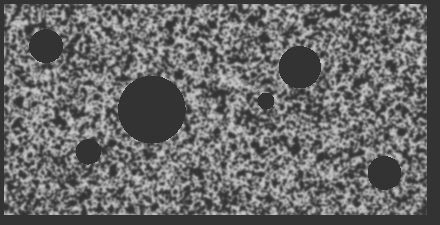
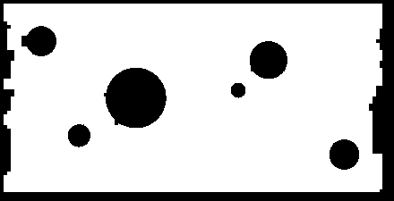
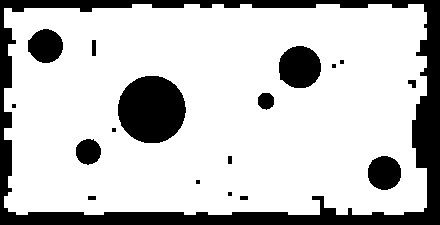
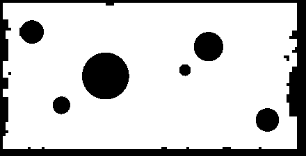

Contrôle décisif sur les images originales — Même solveur IC-GN (Gauss–Newton à composition inverse), mêmes paramètres. Avant : 3 191 / 5 126. Après : 3 205 / 5 126. Dans la première couronne : 149 / 246 dans les deux cas. Les 3 904 états du calcul mixte incluent ceux obtenus par Gauss–Newton direct. Les 4 709 acceptations sur fenêtres redressées correspondent à un autre espace de calcul. La justesse des déplacements reste à établir.

Référence et cible remappée sur les supports acceptés. Les lacunes sont remplies avec le niveau du fond.

En blanc, domaine couvert par une fenêtre acceptée après redressement.
Comptages et contrôle sur les images originalesLes anciennes fenêtres sont conservées. Les lacunes reçoivent une affine vérifiée sur les pixels originaux. Les fenêtres ajoutées par Gauss–Newton direct utilisent les dérivées de la cible et un pas décroissant.
Plaque entière 3191 → 3904 / 5126. Première couronne 149 → 166 / 246.
Zones sans support représentées par le niveau du fond.


Couverture avant et après. Paramètres par fenêtre et provenance · Comptages · Image corrigée